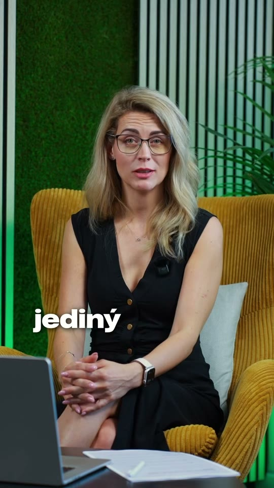

Parťák
20 000 Kč · jednorázová podpora
- Logo v sekci partnerů na webu Jinde.
- Poděkování firmě v Edu.
- Odznak „Podporujeme Jinde“ pro vlastní komunikaci.
Bezplatné kariérní vzdělávání dnes.
Relevantnější propojení lidí a firem v další fázi.
Jinde.app · Nabídka partnerství pro firmy v Moravskoslezském kraji
Jina Malecovázakladatelka Jinde · HR manažerka
Pomozte nám přivést do Edu další lidi.
Staňte se partnerem Jinde.
Jina Malecovázakladatelka projektu
Zájem už existuje
Lidé se do Jinde zapojují už dnes.
Registrace a profesní dotazník nám pomáhají poznat zkušenosti lidí a to, jakou práci hledají.
Zdroj: údaje týmu Jinde. Zhlédnutí nejsou počet unikátních lidí.

Bez známostí se tam nedostaneš? Kde firmy opravdu hledají lidi 👇
0 zhlédnutí